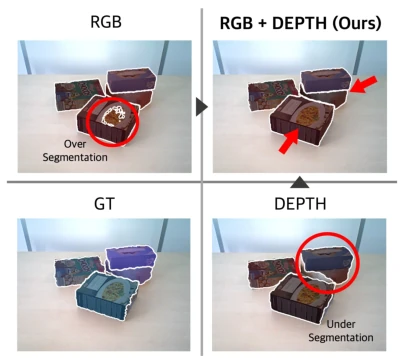
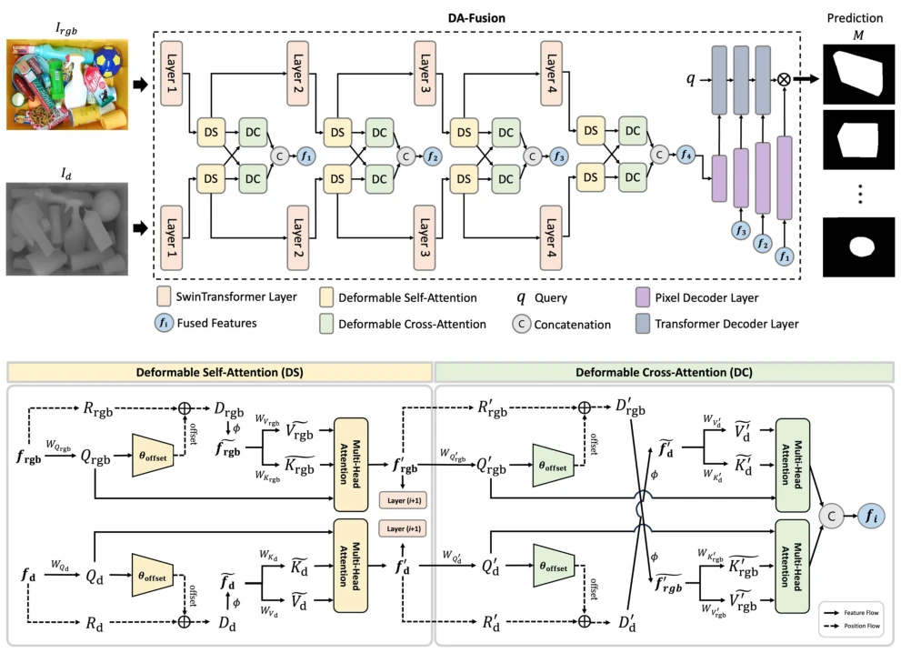
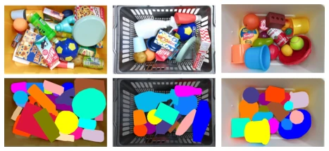
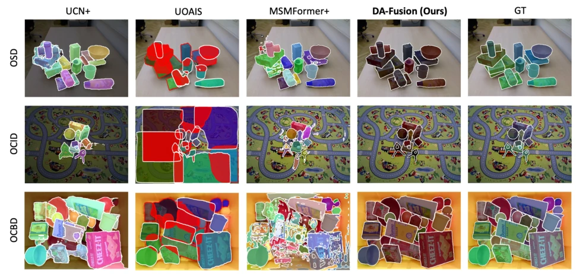
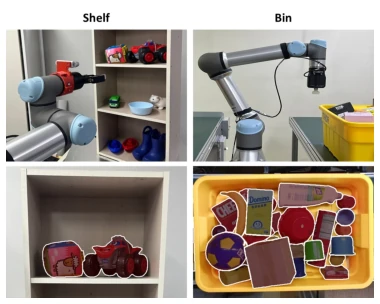

This paper attempts to address the segmentation challenge of "invisible" objects in logistics scenarios, with the core strategy being a "dual-pronged approach" — integrating RGB texture and Depth geometric information via a deformable attention mechanism. To be frank, RGB-D fusion is a well-trodden topic, but the author employs Deformable Attention to dynamically align feature points, which is indeed more sophisticated than simple Early/Late Fusion, particularly under severe object stacking occlusion. However, although the OCBD dataset is real, 1000 images appear somewhat limited in the deep learning era, and it primarily relies on the Mask Transformer's class-agnostic framework, with innovations lying more in the fusion strategy than the architecture itself. Fortunately, the real-world hardware experiments were successful, which is an advantage over pure simulation data, but whether the computational overhead is controllable remains a question? After all, Deformable Attention itself is not inexpensive. Overall, this is a solid engineering optimization suitable for logistics scenario deployment, but theoretical breakthroughs are limited; do not expect it to solve all perception problems.
In the field of logistics automation, robots must handle "unknown" objects in cluttered environments, such as bin-picking or shelf-picking. Existing segmentation methods often sacrifice one for the other: pure RGB methods are prone to texture interference leading to over-segmentation, while pure depth methods lead to under-segmentation due to excessive focus on geometric features [1], [2]. Although existing research attempts to fuse RGB-D, early, intermediate, or late fusion strategies struggle to fully utilize the complementarity between modalities [22], [23], [24]. More critically, existing benchmark datasets such as OCID and OSD mostly focus on front views or simple stacking, lacking top-view, multi-layer occlusion scenarios required for bin-picking in the real world [4], [9]. Meanwhile, existing bin datasets are mostly simulation-based or single industrial parts, lacking real noise and diversity [5], [6], [7], [8]. Therefore, there is an urgent need for a segmentation framework capable of dynamically fusing multi-modal information and adapting to real-world complex scenarios.

Fig. 1. Unseen Object Segmentation results on [4]. RGB-based segmentation tends to over-segment (top left), while depth-based under- segments (bottom right). Our fusion strategy improves accuracy (top right). Note that GT (bottom left) is auto-labeled [4].
The overall architecture of DA-Fusion is based on Mask Transformer, employing a dual-branch parallel feature extraction scheme. Inputs are RGB images and HHA-formatted Depth maps, extracting multi-scale features via a 4-layer Swin Transformer Backbone. The core innovation lies in the feature fusion stage: first, a Deformable Self-Attention (DS) module is introduced, utilizing learned offsets to dynamically adjust sampling points for refined enhancement of single-modal features; subsequently, cross-modal fusion is achieved through a Deformable Cross-Attention (DC) module, where RGB query vectors attend to Depth's Key/Value and vice versa, thereby dynamically aligning texture and geometric information across multiple levels. The fused features (f1-f4) are fed into the Mask Transformer decoder, which includes a pixel decoder and a Transformer decoder, ultimately generating instance segmentation masks. This design avoids the difficulty of feature alignment in traditional fusion, reduces computational cost through the deformable mechanism, while retaining fine-grained details.

Fig. 2. Overview of the DA-Fusion Architecture. Two parallel branches extract features from RGB and depth inputs, which are fused at multiple layers using deformable attention. The fused features are processed by the Mask Transformer decoder [19] to generate segmentation masks.

Fig. 3. OCBD Dataset Examples. Example images from OCBD with their segmentation GTs, illustrating the dataset’s diversity and complexity.
Experiments were conducted on three benchmarks: OCID, OSD, and the newly proposed OCBD dataset by the authors. OCBD contains 1000 top-view RGB-D images, covering real bin scenarios. Evaluation metrics include Overlap, Boundary, and F-measure. Comparison baselines include UCN, UOAIS, Mask2Former, and other state-of-the-art (SOTA) methods. Results show that DA-Fusion achieved the highest scores on OCID and OSD under RGB-D input, particularly outperforming single-modal methods when handling occlusion and complex backgrounds. On OCBD, the model significantly outperformed in overlap and boundary metrics, demonstrating its robustness in real-world cluttered scenarios. Ablation experiments indicate that the DS+DC module combination yields the best results. Additionally, real-world hardware experiments on the UR5e robot arm verified the success rate of shelf and bin picking tasks, confirming the algorithm's sim-to-real transfer capability.

Fig. 4. Qualitative Evaluation. Comparison of instance segmentation results across OSD (top row), OCID (middle row), and OCBD (bottom row) datasets. From left to right: UCN, UOAIS, MSMFormer, our DA-Fusion method, and GT. DA-Fusion demonstrates superior segmentation of accumulated objects in OSD, better object delineation in feature-rich backgrounds in OCID, and more accurate detection of occluded objects in lower layers in OCBD, as evidenced by the closer resemblance to GT.

Fig. 5. Examples from Real-Robot Experiments. Shelf picking (left column) and bin picking (right column) tasks with corresponding segmen- tation results demonstrating effectiveness of DA-Fusion in diverse real-world manipulation environments.